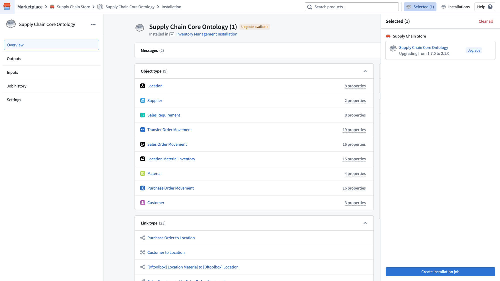
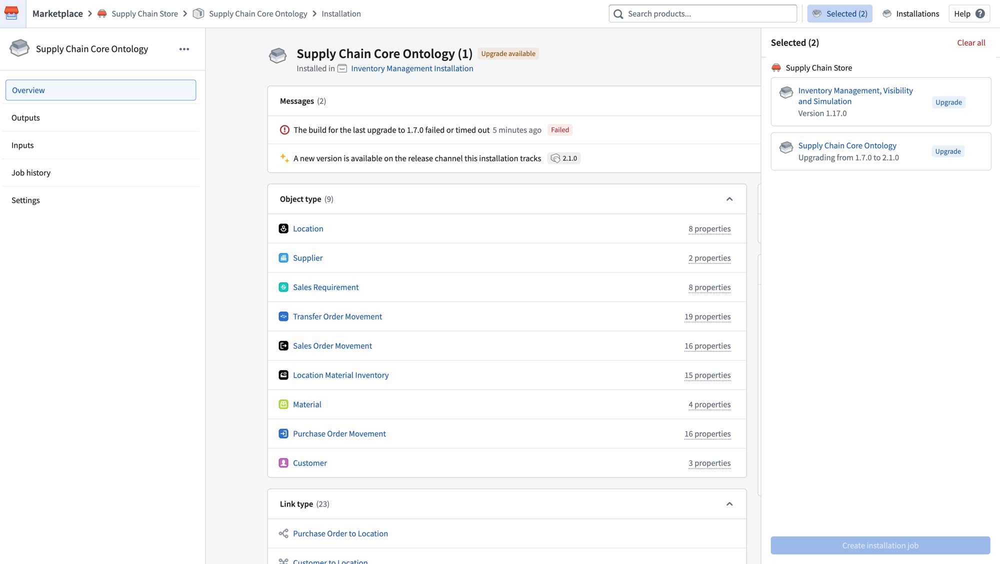
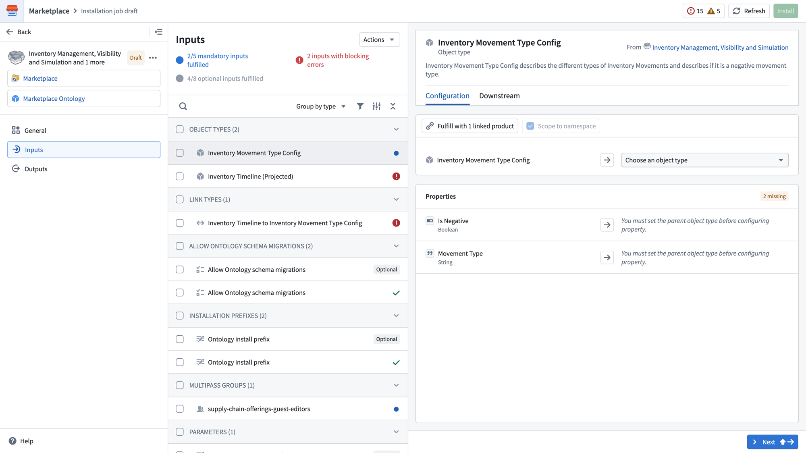
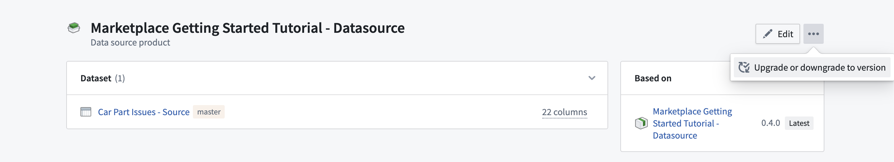

When a new version is available for an installation, you can stage it for upgrade from the installation page. The installation will show an Upgrade badge and appear in the Selected panel on the right.

You can stage multiple installations together for an upgrade in the same job by navigating to each installation page and adding them to the selected list. Once all desired installations are selected, select Create installation job to begin the upgrade.

If you do not want to upgrade to the latest version, or instead want to downgrade to an earlier version, you can select the ellipsis (...) and choose Upgrade or downgrade to version. See Downgrades for more information. It is also possible to Edit an installation, which will create another installation job at the existing version. This can be used to edit inputs or force re-run an installation job without changing the product version.
When entering the upgrade draft, you may need to fill in new inputs or resolve any new errors that arise from the upgrade. The Inputs page will indicate any mandatory inputs that are not yet fulfilled and any inputs with blocking errors.

:::callout{theme="neutral" title="Beta"} Automatic upgrades in Marketplace are in the beta phase of development and may not be available on your enrollment. Functionality may change during active development. :::
Automatic upgrades are disabled by default for both Production mode and Bootstrap mode products. You can configure automatic upgrade settings in the installation settings. Automatic upgrade settings include the following:
Release channels are hierarchical rather than mutually exclusive. Depending on the track:
Upgrades will still require manual action if the new product version includes new inputs that must be mapped, or if any validation errors arise. If this is the case, you will be guided through the same manual configuration workflow as manual upgrades.
To downgrade to a previous version or upgrade to a specific version of a product, start by selecting the ellipsis in the top right corner of the installation page. Then, choose Upgrade or downgrade to version.

A dialog will appear where you can choose the version. After making your selection, initiate the upgrading or downgrading process by selecting Create a draft.